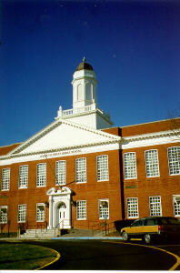

Robert M. Finley Middle School
|  | The Robert M. Finley Middle School, serving students in grades five through eight, is made up of several buildings: the west wing, built in 1910 and renovated in 1989; the east wing, built in 1938; and the Unified Arts Center/Media Center and gymnasium, built in 1975. The school, which is set on 20 acres of land, is equipped with a library and audio-visual center, physical education complex, learning resource room, reading and computer labs, a unified arts center housing the home economics, fine arts and Wunsch Auditorium, a cafeteria, school store, and playing and ball fields. | ||
| Enrichment programs are offered at the school, as well as a choice of three foreign languages. The school is known for its award winning music program. It was also one of the first middle schools in the nation to institute team teaching, an approach which has been highly successful and continues to serve as a model for other districts. | |||
Dr. Carl LaPointe, Principal, can be reached at 759-7241.| Teacher Web Sites | Physical Education Department Information | GO BACK TO DISTRICT HOME PAGE | |